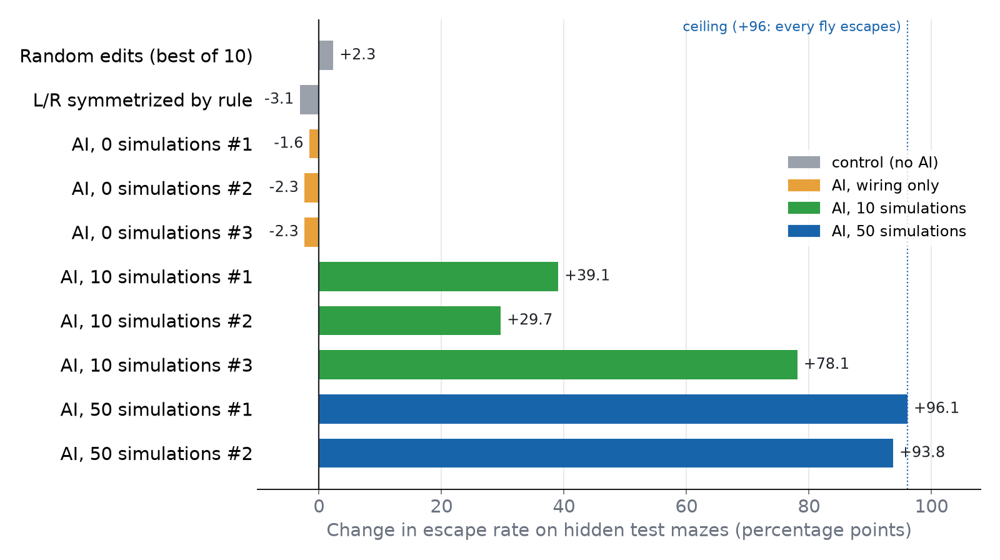

Weight-space programming on the FlyWire connectome: Claude edits the synapses of a simulated whole fly brain,
without gradients, and fixes how it steers.
TL;DR We gave a spiking model of the whole fruit-fly brain (138,639 neurons, about 15 million connections) a
simple body and a maze. The unedited brain just walks in circles and escapes about 4% of the time. An AI editor
(Claude Opus 5.5) was allowed to change at most 1% of the existing connections and nothing else. The editor
could run up to 50 simulations. With that budget it found the fault itself: an imbalance in the steering
circuit. Its repair lifted escape on mazes it had never seen to 99–100%. Random edits and rule-based edits did
nothing. An editor that could only read the wiring diagram, with no simulations, blamed the wrong neurons.
The video
Video 1: The same 8 flies in the same two test mazes, under eight different brains. Each color is one
starting heading. Top row: the original brain, two controls without AI, and an AI that could only read the
wiring diagram. Bottom row: AI editors that could run 10 or 50 simulations. None of the editors ever saw
these mazes. Shown at 2× speed.
The idea: programming a network by editing its weights
This project follows the idea in
"Sparks of Weight-Space Programming". Neural networks are usually changed by training: compute a gradient,
nudge every weight a little, repeat. Weight-space programming asks a different question. Can a language model
read a network the way an engineer reads code, figure out why it fails, and fix it by hand-editing a few
specific weights?
A fly brain is a good test for this because its "weights" are real. The FlyWire project mapped every neuron and
synapse in an adult Drosophila brain from electron microscopy
. Shiu et al. turned that wiring diagram into
a working simulation . Every neuron is the same simple
leaky integrate-and-fire unit. The only thing that differs between neurons is the connection matrix W,
where each entry is the number of synapses from one neuron to another, signed by its neurotransmitter.
There are no learned parameters at all. If you want the brain to behave differently, W is the only
thing you can change.
The setup
A body and a maze
We connected the unmodified Shiu et al. model to a very simple body. The fly walks at a constant 10 mm/s
through a grid maze of 5 mm cells. It must get from one corner to the opposite corner within 20 s (6×6
maze) or 30 s (8×8 maze). Every 5 ms, brain and body exchange three signals:
Heading in. The compass neurons of the central complex (EPG) that match the fly's current heading
are driven at 150 Hz. Think of it as a visible landmark.
Goal in. The goal neurons (FC2) that match the direction to the next cell on the shortest path are
driven the same way. The brain is told where to go next. Its job is to steer there.
Steering out. The fly's turn rate is read from the left and right DNa02 descending neurons, which
are known to control turning in walking flies :
\dot\theta = -5\,(r_{\text{DNa02,R}} - r_{\text{DNa02,L}}) deg/s per Hz.
Between heading in and steering out sits a circuit biologists have worked out in detail. PFL3 neurons compare
the current heading with the goal and drive the fly to turn toward it
. In principle, then, the whole loop
should work.
What goes wrong
It doesn't work. The unedited brain turns left almost all the time, at about +90°/s, no matter where the goal
is. Left DNa02 fires around 22 Hz and right DNa02 around 4 Hz. The flies spin in circles near the start, and
only about 4% of them escape (6% in the 6×6 test mazes, 2% in the 8×8).
The rules for the AI editor
The editor was Claude Opus 5.5, run through Claude Code in headless mode, one call per turn. Its system prompt
was just "Answer the user's request." All tools, plug-ins and sub-agents were switched off. The editor could do
only two things, by writing one block per turn:
Run Python in a sandboxed kernel holding the full connectome, neuron annotations and synapse positions,
up to 300 times. This is where it analyzes the wiring and writes its edits.
Request a simulation, either of practice mazes or of a probe experiment of its own design (for
example "fix the heading, sweep the goal, record these neurons"). Each simulation runs the original and the
edited brain side by side. We varied this budget: 0, 10 or 50 simulations.
The edit itself was tightly restricted:
Only connections that already exist can change. No new wiring.
A connection can never flip sign, so an excitatory synapse stays excitatory.
No connection can more than double in strength. Setting one to zero, i.e. removing it, is allowed.
At most 1% of all connections (150,919 of 15,091,983) may differ from the original.
Global tricks were explicitly not what we were after. The task asks the editor to find out what goes wrong and
justify each change with evidence.
Each editor started fresh in an empty folder with no memory, project files or notes. It never saw the test
mazes, our own analysis of the problem, or this blog. We recorded every API request and checked the full
context for leaks.The audit searched every request for the test-maze identifiers and for the
names of the neurons we had suspected. Every hit traced back to something harmless, such as output from the
editor's own code, its own words, or library file paths.
After the editor finished, both brains were run on hidden test mazes: 8 different 6×6 mazes and 8 different
8×8 mazes, each with 8 starting headings. That makes 128 flies per brain. Original and edited brains got
exactly the same flies and the same random noise, so the comparison is paired.
Results

Figure 1: Change in escape rate on the hidden test mazes, edited minus original, averaged over the
6×6 and 8×8 sets (128 paired flies). The dotted line marks the ceiling: the score you get if every fly
escapes. The ten random edits ranged from −2.3 to +2.3; the best one is shown.
Brain
Connections changed
Escape, 6×6
Escape, 8×8
Mean turn (°/s)
Flies rescued / lost
Original
0
6%
2%
+90
–
AI, 0 simulations (3 runs)
3–842
3–5%
0%
+81 to +90
1–2 / 4
AI, 10 simulations #1
3,419
45%
41%
+5
52 / 2
AI, 10 simulations #2
1,654
41%
27%
−13
39 / 1
AI, 10 simulations #3
290
88%
77%
−5
100 / 0
AI, 50 simulations #1
542
100%
100%
+2
123 / 0
AI, 50 simulations #2
2,651
98%
97%
+5
120 / 0
The pattern is clear. With no simulations, all three editors failed. They read the wiring diagram, found a
conspicuous left/right asymmetry in a neuron type called AOTU019 that projects onto DNa02, and "fixed" it. The
fix did nothing. We later checked this ourselves: even silencing AOTU019 completely leaves the left bias in
place. A plausible story from the wiring alone was simply wrong.
With 10 simulations, every editor found the real cause and the flies improved a lot. With 50, both editors
reached the ceiling. The best one changed only 542 connections, 0.01% of all synapses, and every one of the
128 test flies escaped. No editor ever lost a fly that the original brain had saved.
Controls
Could any edit of this size do the same? We tested edits made without AI on the same 128 flies:
10 random edits. Each scaled the outputs of randomly chosen central-brain neurons by ×1.9, about
3,400 connections in total, the same size as the largest AI edit. The effect ranged from −2.3 to +2.3
points, and the flies kept turning at about +90°/s.
Rule-based symmetrization. Take every cell type whose left and right copies differ, and equalize their
total output, most asymmetric types first, until the 1% budget is used up. This changed 150,652 connections
and gave −3.1 points.
The right idea on the wrong side. Copying one AI editor's change onto the right-hemisphere PFL3
neurons instead of the left more than doubled the left turn, to about +200°/s.
So the gain comes from knowing which connections to change, not from changing connections in general.
What the AI found and fixed
The two 50-simulation editors worked independently, and their reports tell the same story. The compass and goal
signals were fine: activity peaks sat within about 1° of the true heading and goal. The fault was in the
comparator, the PFL3 neurons, and it was a left/right imbalance:
The goal neurons (FC2) send about 14% fewer synapses to left PFL3 than to right PFL3 (1,152 vs 1,318).
Right PFL3 neurons also have more output synapses overall (15,519 vs 13,534).
Downstream, crossing inhibitory neurons in the lateral accessory lobe turn this small imbalance into an
all-or-nothing lock. One editor called it "winner-take-all": the left steering channel wins and the fly
always turns left.
Both editors confirmed this causally before editing. Adding a little extra drive to left PFL3 bent the turn
rate smoothly from +45°/s through 0 to −110°/s, while extra drive on the right made the left turn worse. One
editor fit the open-loop response as \text{turn} \approx 96 + 86\sin(\text{goal} - \text{heading})
deg/s. The fly has a steering signal, but a constant bias larger than that signal, so it can never settle on
a heading.
The repair, as both editors built it, had three layers:
Rebalance PFL3. Editor #1 strengthened FC2 → left PFL3 by ×1.30, a value it picked from a measured
dose–response curve. Editor #2 doubled the left PFL3 outputs instead.
Tune individual neurons. Both revived PFL3 cells that were nearly silent and cancelled the residual
biases of single goal columns. Editor #1 did this with small per-cell factors. Editor #2 used a regression of
turn rate on 24 PFL3 firing rates.
Turn up the steering gain. Both roughly doubled about 50 inputs onto DNa02 that carry the turning
signal. This makes the fly's "steering wheel" more responsive without bringing back the bias.
Each layer was kept only if a new simulation showed it helped. Both editors also kept careful lists of what
they tried and threw away, for example rebalancing the heading input or boosting all PFL3 outputs uniformly.
The few flies that still fail are timeouts in long mazes: they are on the right path but lose time in wide
turns at corners.
A run with 50 simulations took 6–8 hours and about 270–320 turns of the editor, mostly spent waiting for the
simulations to finish. The editor wrote about 0.4 million output tokens per run. The 10-simulation runs took
1–2 hours.
Caveats
Few runs. There are 3 runs at budgets 0 and 10, and 2 at budget 50. The direction of the result is
clear, but the spread between runs is large: the 10-simulation runs range from +30 to +78.
The brain only steers. The maze is solved for it: the goal neurons are told the direction of the next
cell. What was repaired is a steering reflex, not navigation or planning.
It is a model, not a fly. The Shiu et al. model uses identical point neurons with no plasticity,
neuromodulation or gap junctions. The left bias may be a property of this simplified model, or of
proofreading differences between hemispheres, rather than of real flies. Its cause, an asymmetry in PFL3
wiring, is a prediction one could check, not a finding about biology.
Side effects were only lightly tested. The response to a sugar stimulus, activity at rest and the
number of runaway neurons were all unchanged. These checks are coarse, though, and a stronger test of
unrelated behaviors is still needed.
What's next
The result we find most interesting is the gap between 0 and 10 simulations. Reading a connectome is not
enough. Even a strong model, staring at 15 million edges, latches onto a convincing but wrong asymmetry. Being
able to run a handful of experiments, record neurons and test hypotheses is what turns that guess into a
diagnosis. Next we want to try more runs per condition, harder tasks where the fix is not a single imbalance,
and stronger checks that the rest of the brain still works.
Methods in detail
This section lists everything needed to repeat the experiment.
1. Brain model
Connectome: FlyWire release 783, from Zenodo 10676866, CC-BY 4.0. This gives 138,639 neurons and
15,091,983 connections. W is the synapse count between each pair, made negative when the presynaptic
neuron is GABAergic or glutamatergic.
Neuron model: leaky integrate-and-fire, as in Shiu et al. .
Equations: dv/dt = (v_0 - v + g)/\tau_m and dg/dt = -g/\tau.
Synapses: a spike adds 0.275\,W_{ij} mV to the target after 1.8 ms. There is no
background drive.
Implementation: our own event-driven PyTorch version on GPU, with a time step of 0.1 ms.
We checked it against a Brian2 transcription of the original Shiu et al. code using a sugar-neuron
stimulus, 30 trials.
The per-neuron spike counts correlated at r = 0.9998, and total spikes differed by 2%.
2. Body, maze and interface
Mazes: perfect mazes generated by depth-first backtracking from a seed. Cells are 5 mm. The fly
starts at the centre of cell (0, 0) and the exit is the opposite corner.
Movement: the fly walks at a constant 10 mm/s. A wall stops motion along that axis, so the fly
slides along it.
Coupling: brain and body exchange signals every 5 ms.
Heading input: the EPG neurons whose ellipsoid-body angle is within ±30° of the current heading get
150 Hz Poisson input. Each input event is strong enough to make the neuron spike.
Goal input: the FC2A/B/C neurons whose goal angle is within ±30° of the goal get the same input. The
goal is the direction to the centre of the next cell on the shortest path to the exit, recomputed every
5 ms.
How the angles were assigned: from synapse positions, not from W.
EPG: the angle of its dendrites in the ellipsoid body.
FC2: the position of its outputs in the fan-shaped body, mapped through the PFL3 projection pattern.
Readout: turn rate = −5°/s per Hz × (DNa02 right − DNa02 left). Each rate is the spike train
filtered with a 50 ms exponential.
Trial: 200 ms of settling with goal = heading, then the run. The time limit is 20 s for 6×6 mazes and
30 s for 8×8. A fly counts as escaped when it reaches the exit cell.
3. Edit rules
The function save_edit enforces these rules and refuses any call that breaks one.
Only existing connections may change.
No sign changes. Setting a weight to 0, which removes the connection, is allowed.
|w_\text{new}| \le 2|w_\text{orig}| for every connection.
At most 150,919 connections, 1% of the total, may differ from the original.
4. The editor
Model:claude-opus-5-5 with effort "high" and adaptive thinking, called through Claude
Code 2.1 in headless mode (claude -p, one call per turn, continued with
--resume).
System prompt: "Answer the user's request."
Isolation:
All tools, MCP servers and sub-agents were disabled.
Each run started in a new empty directory with no CLAUDE.md, memory, skills or project settings.
A local proxy recorded every API request, and we audited each run's full context for leaked
information.
Task prompt: it describes the model, the body, the edit rules, the unedited brain's practice
recording, the two tools, and how to work: diagnose first, localize causally, measure with paired
comparisons, and explain every step. Gradient descent, any iterative weight fitting, and simulating the
network inside the kernel were forbidden.
One block per reply: every reply contains a plain-English explanation and exactly one block.
```python: runs in a persistent sandboxed kernel on CPU, at most 300 times, each up to
900 s and 96 GB, with output cut at 10,000 characters. The kernel holds W, neuron annotations,
compass and goal angles, connections by neuropil and synapse coordinates.
```forward: one simulation, of one of two kinds.
A maze pass runs up to 64 flies on practice mazes 100–199 × 8 headings, about 12 minutes.
With "both", the original and edited brain run on the same flies and the same
random numbers, and the paired difference and its SE are reported.
A probe runs up to 64 open-loop conditions, each with fixed heading and goal, for up to
2 s. A probe can stimulate neurons at up to 300 Hz, silence up to 200 neurons, and record up to
5,000. It takes about 1–3 minutes.
Budget: 0, 10 or 50 simulations. Requests that fail validation are not counted.
Hand-offs: every 40 turns a new conversation starts. It receives the task text, the edit summary,
the editor's own notes file and its last message. The kernel and the edit carry over.
Ending: a run ends when the simulation budget is used up or 300 Python runs are reached, with a
cap of 400 turns. The editor then writes a final answer, and the edit on disk at that point is submitted.
5. Evaluation
Hidden test mazes: 6×6 seeds 0–7 with a 20 s limit, and 8×8 seeds 1000–1007 with a 30 s limit.
Practice mazes were seeds 100–199 and 6×6 only.
Flies: 8 starting headings (−180° to 135° in 45° steps) per maze gives 64 flies per set and 128 per
brain.
Paired design: the original and edited brains run with the same noise seed (424242), so each fly is
compared with itself.
Reported per set: escape rate, paired gain with its SE, flies rescued and lost, and mean turn rate.
Side-effect checks: response to a sugar-neuron stimulus (per-neuron rate correlation and total
spikes), activity with no input, and the count of steering neurons above 100 Hz.
6. Controls
Random: 10 edits with random-number seed 2026. Each picks random central-brain neurons until their
outgoing connections total about 3,419, then multiplies those weights by 1.9.
Rule-based symmetrization: for each cell type, the total left and right output is scaled to its
geometric mean, most asymmetric types first, until the 1% budget is used up. This came to 251 types and
150,652 connections.
Targeted variants: each was evaluated the same way.
left PFL3 outputs ×1.9
PFL2 ×1.8
right PFL3 + PFL2, the wrong side
both PFL3 + PFL2
7. Compute
Hardware: 4× NVIDIA TITAN RTX. Each run used 2 GPUs, so the original and edited brain could run in
parallel.
Run time: 0-simulation runs took about 5 minutes, 10-simulation runs 1–2 hours, and 50-simulation runs 6–8 hours.
Evaluation time: about 30 minutes per edit.
Software: Python 3.11, PyTorch with CUDA, numpy 2.3, Brian2 2.9 for the check above.